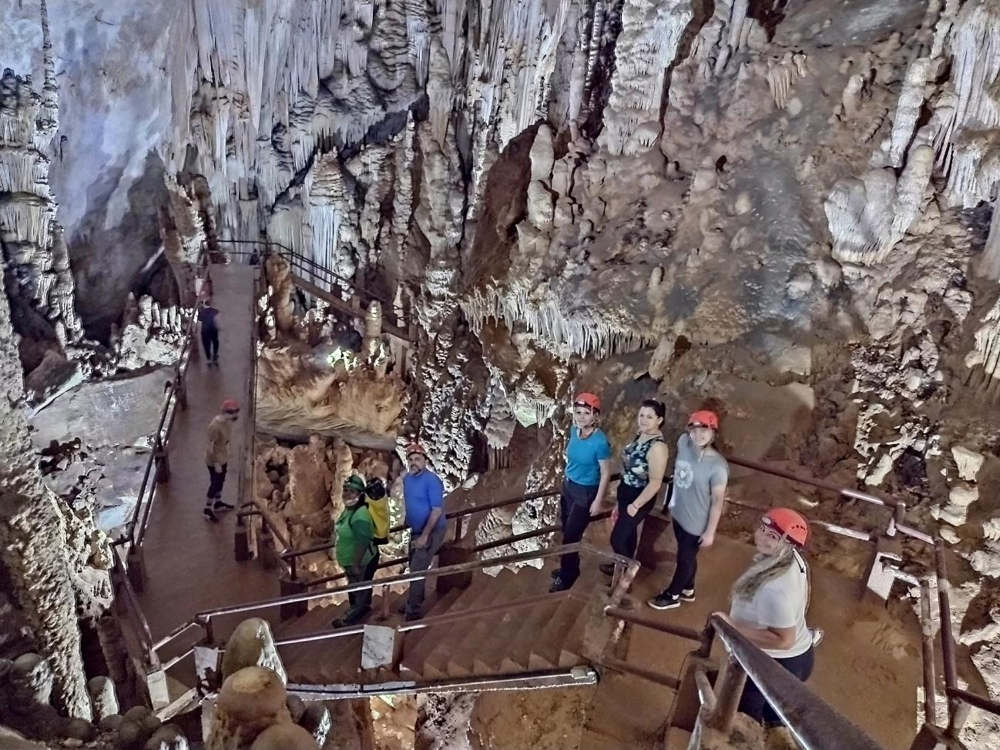
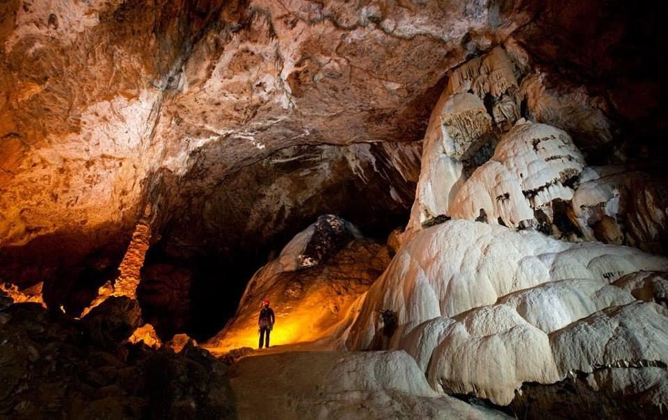
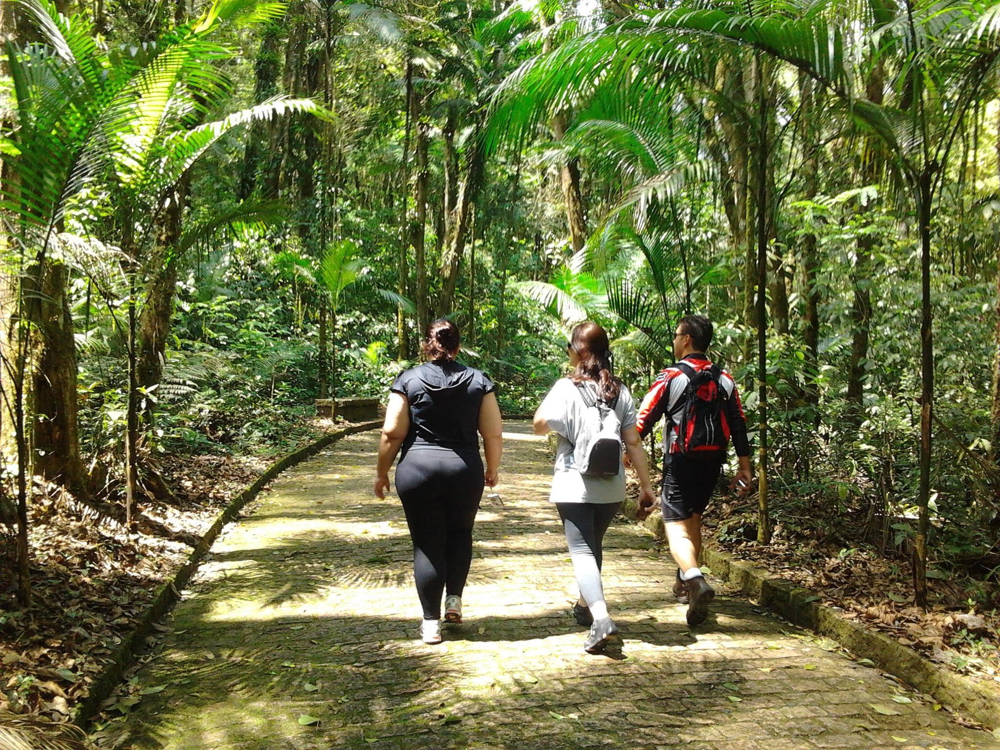

Detalhes do Roteiro
A Caverna do Diabo, também conhecida como Gruta da Tapagem, é uma das cavernas mais populares do Brasil. Seu apelido intrigante capturou a imaginação de todos, e a fama que a envolve é totalmente merecida. Localizada no estado de São Paulo, essa magnífica caverna é uma das maiores do país, com proporções gigantescas que deixam os visitantes maravilhados.
Com seis roteiros turísticos diferentes, você terá a oportunidade de atravessar de uma boca a outra, uma experiência verdadeiramente emocionante.
Esta caverna não é apenas um espetáculo visual, mas também uma das mais antigas cavernas de calcário, comprovação científica de sua importância histórica e geológica.
Prepare-se para se maravilhar com suas formações rochosas impressionantes, estalactites e estalagmites que parecem esculpidas à mão pela natureza ao longo de milênios.
Serviços incluídos:
Translado privativo in/out saindo de Morretes e Curitiba;
Tarifas
| N° de pessoas | Guia bilíngue | Adulto | Criança |
|---|---|---|---|
| 2 a 6 | Não | R$ 850.00 | R$ 750.00 |
| 2 a 10 | Sim | R$ 925.00 | R$ 850.00 |
Galeria de Fotos


